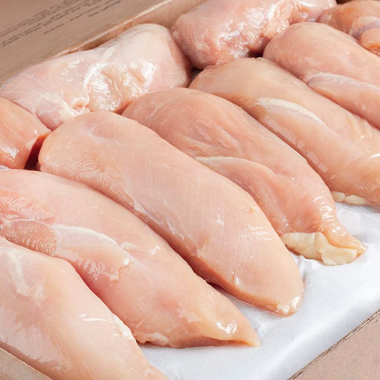
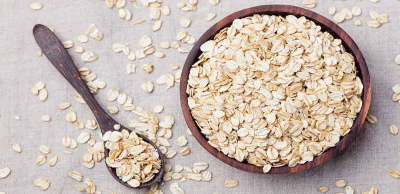
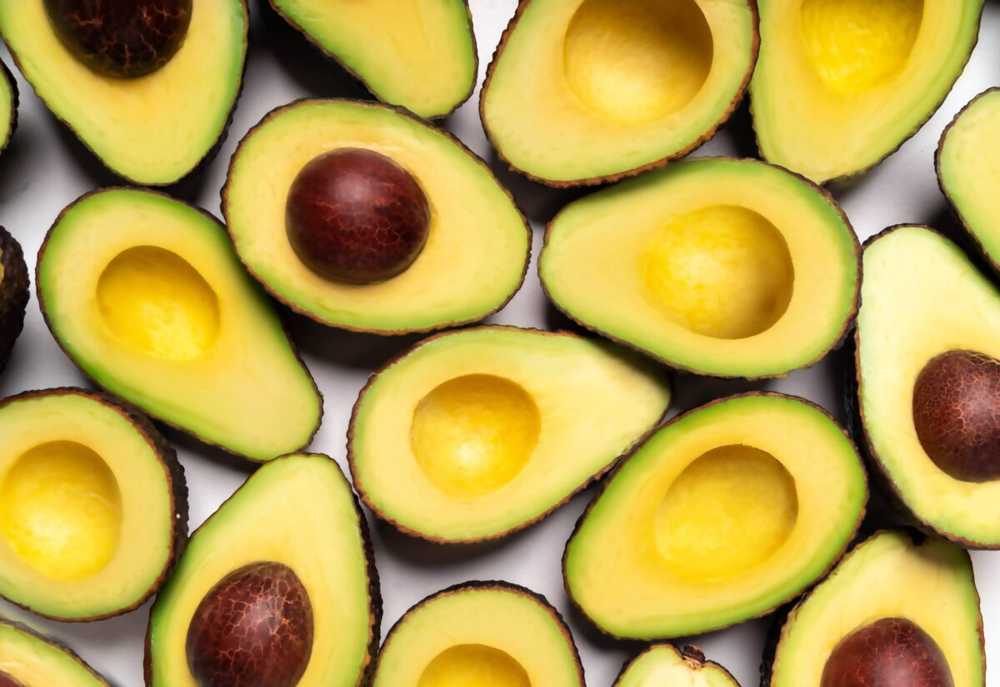
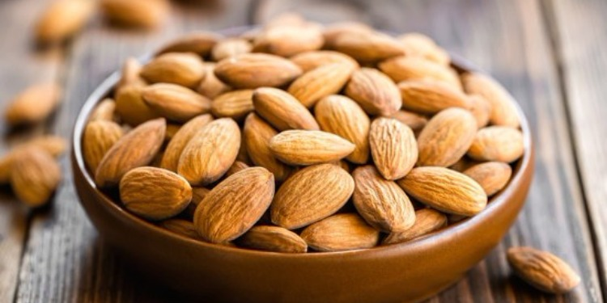

مصادر البروتين عالية الجودة
البروتين أساسي لبناء العضلات، إصلاح الأنسجة، وإنتاج الإنزيمات والهرمونات. البروتينات الكاملة تحتوي على جميع الأحماض الأمينية الأساسية.

بروتين حيواني
صدر دجاج (100 جرام)
القيم الغذائية
- السعرات الحرارية: 165 سعرة
- البروتين: 31 جرام
- الدهون: 3.6 جرام
- الكربوهيدرات: 0 جرام
- الحديد: 1 ملجم
- فيتامين ب6: 0.5 ملجم
الفوائد الصحية
- بروتين كامل يحتوي على جميع الأحماض الأمينية الأساسية
- قليل الدهون (خاصة عند إزالة الجلد)
- غني بفيتامينات ب المهمة للطاقة
- يساعد في بناء العضلات والحفاظ عليها
- يعزز الشعور بالشبع لفترة أطول
نصيحة: اختر صدر الدجاج المشوي أو المسلوق بدلاً من المقلي للحد من الدهون المشبعة.

بروتين حيواني
سمك السلمون (100 جرام)
القيم الغذائية
- السعرات الحرارية: 208 سعرة
- البروتين: 20 جرام
- الدهون: 13 جرام
- الكربوهيدرات: 0 جرام
- أوميغا 3: 2.3 جرام
- فيتامين د: 570 وحدة
الفوائد الصحية
- مصدر ممتاز لأحماض أوميغا 3 الدهنية
- غني بفيتامين د المهم لصحة العظام
- يحتوي على السيلينيوم المضاد للأكسدة
- يدعم صحة القلب والدماغ
- يقلل الالتهابات في الجسم
نصيحة: اختر سلمون بري عند الإمكان، وتناوله مشوياً أو مطهياً على البخار للحفاظ على قيمته الغذائية.

بروتين نباتي
العدس المطبوخ (100 جرام)
القيم الغذائية
- السعرات الحرارية: 116 سعرة
- البروتين: 9 جرام
- الدهون: 0.4 جرام
- الكربوهيدرات: 20 جرام
- الألياف: 8 جرام
- الحديد: 3.3 ملجم
الفوائد الصحية
- مصدر ممتاز للألياف الغذائية
- غني بالحديد (خاصة للأنظمة النباتية)
- قليل الدهون وخالي من الكوليسترول
- يساعد في تنظيم سكر الدم
- يعزز صحة الجهاز الهضمي
نصيحة: اجمع العدس مع الحبوب الكاملة (كالأرز البني) للحصول على بروتين كامل يحتوي على جميع الأحماض الأمينية.

بروتين حيواني
الزبادي اليوناني (100 جرام)
القيم الغذائية
- السعرات الحرارية: 59 سعرة
- البروتين: 10 جرام
- الدهون: 0.4 جرام
- الكربوهيدرات: 3.6 جرام
- الكالسيوم: 110 ملجم
- البروبيوتيك: مليارات
الفوائد الصحية
- مصدر غني بالبروتين والكالسيوم
- يحتوي على بكتيريا البروبيوتيك النافعة
- يساعد في الهضم وصحة الأمعاء
- يدعم صحة العظام والأسنان
- خيار جيد لوجبات خفيفة منخفضة السعرات
نصيحة: اختر الزبادي اليوناني غير المحلى وأضف إليه الفواكه الطازجة والمكسرات لوجبة متكاملة.
مصادر الكربوهيدرات المعقدة
الكربوهيدرات المعقدة توفر طاقة مستدامة، غنية بالألياف، وتساعد في تنظيم سكر الدم. اختر الحبوب الكاملة بدلاً من المصادر المكررة.

كربوهيدرات معقدة
الكينوا المطبوخة (100 جرام)
القيم الغذائية
- السعرات الحرارية: 120 سعرة
- البروتين: 4.4 جرام
- الدهون: 1.9 جرام
- الكربوهيدرات: 21 جرام
- الألياف: 2.8 جرام
- الحديد: 1.5 ملجم
الفوائد الصحية
- بروتين كامل (نادر في المصادر النباتية)
- خالية من الجلوتين (مناسبة لمرضى السيلياك)
- غنية بمضادات الأكسدة
- مؤشر جلايسيمي منخفض
- غنية بالمغنيسيوم والفوسفور
نصيحة: اغسل الكينوا جيداً قبل الطهي لإزالة الصابونين الطبيعي الذي يعطيها طعماً مراً.

كربوهيدرات معقدة
البطاطا الحلوة (100 جرام)
القيم الغذائية
- السعرات الحرارية: 86 سعرة
- البروتين: 1.6 جرام
- الدهون: 0.1 جرام
- الكربوهيدرات: 20 جرام
- الألياف: 3 جرام
- فيتامين أ: 14187 وحدة
الفوائد الصحية
- مصدر ممتاز للبيتا كاروتين (فيتامين أ)
- غنية بالألياف الغذائية
- تحتوي على مضادات أكسدة قوية
- مؤشر جلايسيمي أقل من البطاطس العادية
- تدعم صحة العيون والجلد
نصيحة: اختر البطاطا الحلوة المخبوزة أو المسلوقة مع قشرتها للحفاظ على الألياف والعناصر الغذائية.

كربوهيدرات معقدة
الشوفان (100 جرام)
القيم الغذائية
- السعرات الحرارية: 389 سعرة
- البروتين: 16.9 جرام
- الدهون: 6.9 جرام
- الكربوهيدرات: 66 جرام
- الألياف: 10.6 جرام
- المنغنيز: 4.9 ملجم
الفوائد الصحية
- مصدر غني بالألياف القابلة للذوبان (بيتا جلوكان)
- يساعد في خفض الكوليسترول الضار
- يعزز الشعور بالشبع لفترة أطول
- يدعم صحة القلب والأوعية الدموية
- ينظم مستويات السكر في الدم
نصيحة: اختر الشوفان الكامل (الخرطال) بدلاً من الشوفان الفوري للحصول على أكبر فائدة غذائية.

كربوهيدرات معقدة
الأرز البني المطبوخ (100 جرام)
القيم الغذائية
- السعرات الحرارية: 111 سعرة
- البروتين: 2.6 جرام
- الدهون: 0.9 جرام
- الكربوهيدرات: 23 جرام
- الألياف: 1.8 جرام
- المنغنيز: 0.9 ملجم
الفوائد الصحية
- يحتفظ بالنخالة والجنين (عكس الأرز الأبيض)
- مصدر جيد للمغنيسيوم والفوسفور
- يحتوي على مضادات أكسدة
- يساعد في السيطرة على الوزن
- يدعم صحة الجهاز الهضمي
نصيحة: انقع الأرز البني لمدة 30 دقيقة قبل الطهي لتقليل وقت الطهي وتحسين القوام.
مصادر الدهون الصحية
الدهون الصحية ضرورية لامتصاص الفيتامينات، صحة الدماغ، والهرمونات. ركز على الدهون غير المشبعة وتجنب الدهون المتحولة.

دهون صحية
الأفوكادو (100 جرام)
القيم الغذائية
- السعرات الحرارية: 160 سعرة
- البروتين: 2 جرام
- الدهون: 15 جرام
- الكربوهيدرات: 9 جرام
- الألياف: 7 جرام
- البوتاسيوم: 485 ملجم
الفوائد الصحية
- غني بالدهون الأحادية غير المشبعة الصحية للقلب
- مصدر ممتاز للبوتاسيوم (أكثر من الموز)
- يحتوي على مضادات أكسدة قوية (لوتين)
- يساعد في امتصاص العناصر الغذائية الذاتية في الدهون
- يدعم صحة الجلد والشعر
نصيحة: أضف الأفوكادو إلى السلطات، السندويشات، أو استخدمه كبديل صحي للمايونيز.

دهون صحية
اللوز (100 جرام)
القيم الغذائية
- السعرات الحرارية: 579 سعرة
- البروتين: 21 جرام
- الدهون: 50 جرام
- الكربوهيدرات: 22 جرام
- الألياف: 12.5 جرام
- فيتامين هـ: 26 ملجم
الفوائد الصحية
- مصدر ممتاز لفيتامين هـ المضاد للأكسدة
- غني بالمغنيسيوم المهم لوظائف العضلات والأعصاب
- يحتوي على ألياف تعزز الشعور بالشبع
- يدعم صحة القلب والكوليسترول الجيد
- يساعد في السيطرة على سكر الدم
نصيحة: تناول حفنة (حوالي 28 جرام) من اللوز يومياً كوجبة خفيفة. يفضل اللوز النيء غير المملح.

دهون صحية
زيت الزيتون البكر (ملعقة كبيرة)
القيم الغذائية
- السعرات الحرارية: 119 سعرة
- البروتين: 0 جرام
- الدهون: 14 جرام
- الكربوهيدرات: 0 جرام
- فيتامين ك: 8 ميكروجرام
- فيتامين هـ: 2 ملجم
الفوائد الصحية
- غني بالدهون الأحادية غير المشبعة
- يحتوي على مضادات أكسدة قوية (بوليفينول)
- له خصائص مضادة للالتهابات
- يساعد في خفض ضغط الدم
- يرتبط بانخفاض خطر الإصابة بأمراض القلب
نصيحة: استخدم زيت الزيتون البكر الممتاز للسلطات والتتبيلات. لا تستخدمه للقلي العميق في درجات حرارة عالية.

دهون صحية
بذور الشيا (100 جرام)
القيم الغذائية
- السعرات الحرارية: 486 سعرة
- البروتين: 17 جرام
- الدهون: 31 جرام
- الكربوهيدرات: 42 جرام
- الألياف: 34 جرام
- الكالسيوم: 631 ملجم
الفوائد الصحية
- مصدر ممتاز لأحماض أوميغا 3 الدهنية
- غنية بالألياف القابلة للذوبان وغير القابلة للذوبان
- تحتوي على نسبة عالية من الكالسيوم النباتي
- تساعد في تنظيم سكر الدم
- تعزز الشعور بالشبع لفترة أطول
نصيحة: انقع بذور الشيا في سائل (ماء، حليب، عصير) لمدة 10-15 دقيقة حتى تتشكل جل صحي يمكن إضافته للعصائر والحلويات.
مقارنة بين مصادر المغذيات الثلاثة
| المغذي | أفضل المصادر | الاحتياجات اليومية للبالغين | وظائف رئيسية | نصيحة للاختيار |
|---|---|---|---|---|
| البروتين | الدجاج، السمك، البيض، العدس، الفول | 0.8 جم لكل كجم من وزن الجسم (56 جم لشخص 70 كجم) |
بناء الأنسجة، الإنزيمات، الهرمونات، المناعة | تنويع بين مصادر حيوانية ونباتية |
| الكربوهيدرات | الشوفان، الكينوا، البطاطا الحلوة، الفواكه | 45-65% من إجمالي السعرات (225-325 جم لـ 2000 سعرة) |
مصدر الطاقة الرئيسي، صحة الجهاز الهضمي | اختر الحبوب الكاملة بدلاً من المكررة |
| الدهون الصحية | الأفوكادو، المكسرات، زيت الزيتون، الأسماك الدهنية | 20-35% من إجمالي السعرات (44-78 جم لـ 2000 سعرة) |
امتصاص الفيتامينات، الهرمونات، صحة الدماغ | ركز على الدهون غير المشبعة وتجنب المتحولة |
احتياجات البروتين اليومية
- شخص غير نشط: 0.8 جم لكل كجم من وزن الجسم
- رياضي معتدل النشاط: 1.2-1.4 جم لكل كجم
- رياضي عالي الكثافة: 1.6-2.2 جم لكل كجم
- كبار السن: 1-1.2 جم لكل كجم للحفاظ على الكتلة العضلية
- الحوامل والمرضعات: زيادة 25 جم عن الاحتياجات العادية
توزيع الكربوهيدرات
- كربوهيدرات معقدة: 80-90% من إجمالي الكربوهيدرات
- كربوهيدرات بسيطة: 10-20% (من الفواكه والحلويات الطبيعية)
- الألياف الغذائية: 25-30 جم يومياً للبالغين
- قبل التمرين: كربوهيدرات معقدة (1-4 ساعات قبل)
- بعد التمرين: كربوهيدرات بسيطة لتعويض الجلايكوجين
توزيع الدهون الصحية
- دهون أحادية غير مشبعة: 15-20% من إجمالي السعرات
- دهون متعددة غير مشبعة: 5-10% من إجمالي السعرات
- دهون مشبعة: أقل من 10% من إجمالي السعرات
- دهون متحولة: أقل قدر ممكن (يفضل صفر)
- أوميغا 3: 250-500 مجم يومياً من EPA+DHA